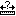

Distancia herramienta de medición
Esta herramienta
puede ser Utilizado para medir la distancia real entre dos lugares del
mapa. En Seleccionando esta herramienta, haga clic en un punto y
arrastre el ratón a otro Punto en el mapa y la liberación. Una línea
azul que conecta los dos puntos aparece Mapa que indica la selección.
La distancia entre los dos puntos Ahora aparecerá en la parte inferior
del mapa.